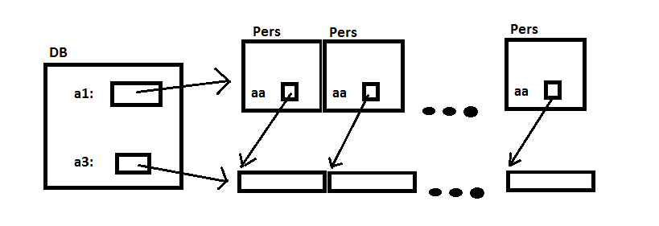

Laborator recapitulativ
Responsabil: Bogdan Nicula
Obiective
Laboratorul este unul recapitulativ, dar vom introduce şi o notiune nouă:
- parametrii liniei de comandă
In cadrul acestui laborator studentul va recapitula urmatoarele noţiuni:
- pointeri
- structuri
- operaţii cu fişiere
- alocare dinamica
- prelucrarea şirurilor de caractere
Parametrii liniei de comandă
Pentru a controla execuţia unui program, de multe ori este de dorit furnizarea datelor de lucru înaintea lansării în execuţie a programului, acesta urmând să se execute apoi fără intervenţia utilizatorului (aşa-numitul „batch mode”). Acest lucru se realizează prin intermediul parametrilor liniei de comandă. (Un exemplu cunoscut este lansarea compilatorului gcc în linia de comandă cu diverse argumente, care îi spun ce şi cum sa compileze.)
Din punct de vedere al utilizatorului, parametrii liniei de comandă sunt simple argumente care se adaugă după numele unui program, în linia de comandă, la rularea sa. Elementele acestei liste de argumente sunt şiruri de caractere separate de spaţii. Argumentele care conţin spaţii pot fi confinate într-un singur argument prin inchiderea acestuia între ghilimele. Shell-ul este cel care se ocupă de parsarea liniei de comandă şi de crearea listei de argumente.
Exemplu de apelare a unui program cu argumente în linia de comandă:
gcc -Wall -I/usr/include/sys -DDEBUG -o "My Shell" myshell.c
În acest caz, argumentele liniei de comandă sunt în acest caz:
- gcc
- -Wall
- -I/usr/include/sys
- -DDEBUG
- -o
- My Shell
- myshell.c
Din punct de vedere al programatorului, parametrii liniei de comandă sunt accesibili prin utilizarea parametrilor funcţiei main(). Astfel, când se doreşte folosirea argumentelor liniei de comandă, funcţia main() se va defini astfel:
int main(int argc, char *argv[])
Astfel, funcţia main() primeşte, în mod formal, doi parametri, un întreg şi un vector de şiruri de caractere. Numele celor două variabile nu e obligatoriu să fie argc şi argv, dar tipul lor, da. Semnificaţia lor este următoarea:
- int argc (argument count) - reprezintă numărul de parametrii ai liniei de comandă. După cum se vede din exemplul anterior, există cel puţin un parametru, acesta fiind chiar numele programului (numele care a fost folosit pentru a lansa în execuţie programul - şi care poate fi diferit de numele executabilului - de exemplu prin crearea unui symlink, în Linux).
- char *argv[] (arguments value) - reprezintă un vector de şiruri de caractere, având argc elemente (indexate de la 0 la argc - 1). Întotdeauna argv[0] conţine numele programului.
Parametrii liniei de comandă se pot accesa prin intermediul vectorului argv şi pot fi prelucraţi cu funcţiile standard de prelucrare a şirurilor de caractere.
Enuntul laboratorului
Vom simula baza de date a unui laborator de analize. O parte din aceasta va fi deja implementata, iar voi trebuie doar sa aduceti imbunatatiri codului deja-existent.
Baza de date va avea urmatoarea structura:
Se dau urmatoarele 2 tipuri:
Pers
Reprezinta un pacient. Campurile acestei structuri sunt:
- nume - sir de forma Nume, Prenume (de ex. Ion,Ion), alocat static (31 octeti)
- ocupatie – reprezinta ocupatia persoanei (de ex. muncitor | student | casnica etc.), alocat static(21 octeti)
- cod_identif – sir de 15 caractere : primele 13 - cnp, ultimele 2 – judetul de domiciliu (de ex. 1870120400423BV), alocat static
- grupa_sanguina – grupa sanguina
- analize – adresa la care se vor memora valori intregi reprezentand rezultate analize medicale standard (este initializata de functia de alocare spatiu)
typedef struct { char nume[30], ocupatie[14], cod_identif[16]; int grupa_sanguina, *analize; /* adresa vector rez.analize */ } Pers;
DB
Reprezinta baza de date. Campurile acestei structuri sunt:
- vect_pers – adresa vector de elemente de tip Pers, alocat dinamic initial
- nr_pers_curent – numar curent persoane (⇐ cu nr.maxim de persoane ce pot exista in vector)
- nr_analize – numar de analize medicale
- nr_pers_max - numar maxim de persoane
- vect_analize – adresa unui vector in care sunt pastrate valorile intregi reprezentand rezultatele analizelor medicale standard pentru numarul maxim de persoane din grup
typedef struct { Pers *vect_pers; /* adrese vector pers */ int nr_pers_curent, nr_analize, *vect_analize; int nr_pers_max; } DB, *ADB;
Aici aveti o imagine a structurii bazei de date:
(am notat: a3-vect_analize, a1-vect_pers, aa-analize)

Tools
Aveti deja implementate urmatoarele functii:
/* Elibereaza spatiul alocat pentru baza de date aflata la adresa aag.*/ void elibereaza(ADB* aag); /* Afiseaza baza de date aflata la adresa ag */ void afiseaza(DB *ag); /* Aloca spatiu pentru o baza de date cu maximum MP persoane si NA analize. */ ADB aloca(int MP, int NA); /* Scrie baza de date aflata la adresa ag in fisierul binar filename. */ int writeToBinary(char *filename, DB *ag); /* Citeste baza de date ag din fisierul filename(se ocupa si de alocari). */ int readFromText(char *filename, DB **ag);
De aici lab12_schelet.zip puteti descarca scheletul laboratorului.
El contine fisierele:
- main.c : Fisierul principal, in care veti face modificari.
- utils.c : Fisierul cu functii utile(alocare, eliberare si afisare)
- database.h: Header
- in.txt : Fisier text de test
- in.bin : Fisier binar de test
- Makefile
Cerinte Laborator
- [2p] Scrieti o functie de afisare selectiva a coloanelor din baza de date. Aceasta va interoga userul(stdin) cu privire la coloanele care trebuiesc afisate si ordinea lor, si apoi le va afisa doar pe acestea, in ordinea specificata.
- [4p] Scrieti functiile:
/*Citeste o baza de date dintr-un fisier binar. Se ocupa si de alocarea spatiului pentru baza de date si vectorii de persoane si de analize. */ int readFromBinary(char *filename, DB **ag) /* Scrie intr-un fisier text baza de date salvata la adresa ag. */ int writeToText(char *filename, DB *ag)
Folositi ca modele functiile writeToBinary, respectiv readFromText. Pentru functia readFromBinary tineti cont de faptul ca pentru fiecare persoana vectorul de analize(aa) va trebui sa pointeze catre o zona din vectorul a3 al bazei de date.
- [2p] Modificati functia main astfel incat programul vostru sa poata fi apelat astfel:
./executabil nume_fis_intrare nume_fis_iesire
Programul va extrage baza de date din fisierul de intrare si o va salva in fisierul de iesire tinand cont de formatul numelui celor 2 fisiere.(Se presupune ca va fi testat doar pe fisiere cu extensie ”.txt”, pentu text, ”.bin” pentru binar). Spre exemplu, pentru apelul:
./executabil in.txt out.bin
Programul va citi baza de date dintr-un fisier text si o va salva intr-un fisier binar.
- [2p] Scrieti functia:
int insertUser(DB *ag)
Aceasta va verifica daca se mai poate introduce o persoana in baza de date(nc < max_size). Daca da, va prelua de la stdin(tastatura) credentialele acelei persoane si le va introduce in baza de date. Daca nu, va afisa un mesaj.
Bonus
- [2p] Scrieti o functie care va unifica 2 baze de date, le va sorta dupa nume si le va salva intr-un fisier.
int mergeDB(DB *a, DB *b, char *filename)